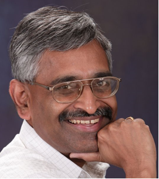
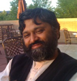
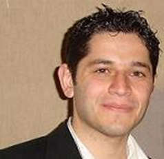
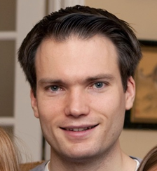
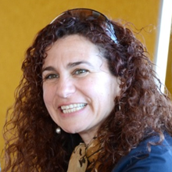
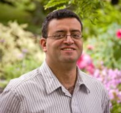

<!DOCTYPE html PUBLIC "-//W3C//DTD XHTML 1.0 Transitional//EN" "http://www.w3.org/TR/xhtml1/DTD/xhtml1-transitional.dtd">
TBD


<!--
<html xmlns="http://www.w3.org/1999/xhtml" xml:lang="en" lang="en">

<head>


  <meta http-equiv="Content-Type" content="text/html; charset=iso-8859-1" />

  <title>VLDB2013 - Tutorials</title>


  <link rel="stylesheet" href="vldb2012.css" />
   
  <style type="text/css">

  -->
<!--
.style3 {
	font-size: 14pt;
	color: #FFFFFF;
}
.style8 {font-size: 18pt}
-->

<!--
  </style>
</head>
</html>
<html xmlns="http://www.w3.org/1999/xhtml" xml:lang="en" lang="en">
<body style="background-color: rgb(255, 255, 255); font-family: arial; font-size: 10pt;">

<table cellspacing=0 cellpadding=0 border=0 width="100%" >
<tr><td align="center">
<table style="width: 1040px; height: 800px;" cellpadding="0" cellspacing="0" border=0>


  <tbody>


    <tr style="height: 151px;">


      <td width="100%" align="left">


<table width="1040" height="120" border="0" align="left" cellpadding="0" cellspacing="0" bordercolor="#CCCCCC">

<tr>
		

<td  align="center" valign="middle" colspan=2> </td>
</tr>
<tr>
<td width="280"></td><td valign="bottom"><hr /></td>
</tr>
</table>

-->
<!-- end header !-->

<!--
</td>
    </tr>


    <tr	valign="top">


      <td>

      <table style="width: 100%; height: 100%;" cellpadding="1" cellspacing="0" border=0>


        <tbody>


          <tr valign="top">
-->
<!-- start side panel !-->

<!--
<td style="width: 27%;">
<div id="sidebar">
<h2>General Information</h2>
<ul><li><a href="index.html">Conference Overview</a></li>
<li><a href="conference_officers.html">Conference Officers</a></li>
<li><a href="review_board.html">PVLDB Review Board</a></li>
<li><a href="industrial_track_committee.html">Industrial Track Committee</a></li>
<li><a href="reproducibility_committee.html">Reproducibility Committee</a></li>
</ul>

<h2>Program</h2>
<ul>
<li><a href="http://db.disi.unitn.eu/pages/VLDBProgram">Detailed Program </a></li>
<li><a href="keynotes.html">Keynotes </a></li>
<li><a href="tutorials.html">Tutorials </a></li>
<li><a href="workshops.html">Workshops </a></li>
<li><a href="social_events.html">Social Events </a></li>

</ul>
<h2>Participant Information</h2>
<ul>
<li><a href="registration.html">Registration</a></li>
<li><a href="conference_venue.html">Conference Venue </a></li>
<li><a href="http://www.rivatour.it/fiere-eventi-en/?IDSelect=10">Accommodation </a></li>
<li><a href="travel_information.html">Travel Information</a></li>
<li><a href="visa_requirements.html">Visa Requirements</a></li>
<li><a href="area_attractions.html">Area Attractions</a></li>
<li><a href="grants.html">Travel Grants</a></li>
</ul>

<h2>Calls</h2>
<ul>
<li>Papers 
<ul>
	<li><a href="research_track.html">Research Track</a></li>
	<li><a href="experiments_analysis.html">Experiments and Analysis Track</a></li>
	<li><a href="industrial_track.html">Industrial Track </a></li>
	<li><a href="phd_workshop.html">PhD Workshop</a></li>
</ul>
<li><a href="call_demonstrations.html">Demonstrations</a></li> 
<li><a href="call_tutorials.html">Tutorials</a></li> 
<li><a href="call_panels.html">Panels</a></li> 
<li><a href="call_workshops.html">Workshops</a></li>
<li><a href="call_nominations.html">Nominations</a></li>
</ul>

<h2>Dates and Guidelines </h2>
<ul>
<li><a href="important_dates.html">Important Dates</a></li>
<li><a href="formatting_guidelines.html">Formatting Guidelines</a></li>
</ul>


<h2>Local Organization</h2>
<ul>
<li><a href="http://db.disi.unitn.eu/"></a>
<p><a href="http://www.unitn.it"></a>
</ul>
</div>


-->
<!-- end side panel !-->    
<!--
  </td>


                    <td style="border-left: 1px solid #CCCCCC; width: 100%; height: 100%" valign="top"><table border="0" width="100%" height="100%" id="table1">
				        <tr>
				          <td align="left" valign="top">
				          
				          <div class="title">Tutorials</div> 
				          <div id="main">
				           <p>
				           <ul>
				           <li>C. Mohan:	<a href="tutorials.html#t1">Modern Database Systems</a><br>
<li>Xin Luna Dong, Divesh Srivastava:	<a href="tutorials.html#t2">Big Data Integration</a><br>
<li>Stratis Viglas: <a href="tutorials.html#t3">Just-in-time compilation for SQL query processing</a><br>
<li>Anastasia Ailamaki, Ryan Johnson, Ippokratis Pandis, Pinar T&ouml;z&uuml;n: <a href="tutorials.html#t4">Toward Scalable Transaction Processing - Evolution of Shore-MT</a><br>
<li>Aaron J. Elmore, Carlo Curino, Divyakant Agrawal, Amr El Abbadi: <a href="tutorials.html#t5">Towards Database Virtualization for Database as a Service</a><br>
<li>Mohamed F. Mokbel, Mohamed Sarwat: Mobility and Social Networking: <a href="tutorials.html#t6">A Data Management Perspective</a><br>
</ul>
<hr width=50%>

<table>
<tr><td><a id="t1"><div class="title2">Modern Database Systems</div></td></tr>
<tr><td><p>
<p><b>Abstract</b><br>
This tutorial is targeted at a broad set of database systems and applications people. It is intended to let the attendees better appreciate what is really behind the covers of many of the modern database systems (e.g., NoSQL and NewSQL systems), going beyond the hype associated with these open source and commercial systems. The capabilities and limitations of such systems will be addressed. Some application case studies will also be presented. An outline of problems for which no adequate solutions exist will be included. Such problems could be fertile grounds for new research work. 
<p><b>Presenter</b></br> 
C. Mohan, IBM Fellow, IBM Almaden Research Center
<p><b>Bio</b><br>
<b>Dr. C. Mohan</b> has been an IBM researcher for 31 years in the information management area, impacting numerous IBM and non-IBM products, the research community and standards, especially with his invention of the ARIES family of locking and recovery algorithms, and the Presumed Abort commit protocol. This IBM, ACM and IEEE Fellow has also served as the IBM India Chief Scientist. In addition to receiving the ACM SIGMOD Innovation Award, the VLDB 10 Year Best Paper Award and numerous IBM awards, he has been elected to the US and Indian National Academies of Engineering, and has been named an IBM Master Inventor. This distinguished alumnus of IIT Madras received his PhD at the University of Texas at Austin. He is an inventor of 38 patents. He serves on the advisory board of IEEE Spectrum and on the IBM Software Group Architecture Board’s Council. More information can be found in his home page at <a href="http://bit.ly/CMohan">http://bit.ly/CMohan</a>
</td></tr>
</table>


<hr width=50%>

<table>
<tr><td><a id="t2"><div class="title2">Big Data Integration</div></td></tr>
<tr><td><p> <b>Abstract</b><br>  
The Big Data era is upon us: data is being generated, collected and analyzed at an unprecedented scale, and data-driven decision making is sweeping through 
all aspects of society. Since the value of data explodes when it can be linked and fused with other data, addressing the big data integration (BDI) challenge 
is critical to realizing the promise of Big Data.
DI differs from traditional data integration in many dimensions: (i) the number of data sources, even for a single domain, has grown to be in the tens of thousands, 
(ii) many of the data sources are very dynamic, as a huge amount of newly collected data are continuously made available, (iii) the data sources are extremely 
heterogeneous in their structure, with considerable variety even for substantially similar entities, and (iv) the data sources are of widely differing qualities, 
with significant differences in the coverage, accuracy and timeliness of data provided. This tutorial explores the progress that has been made by the data integration community on the topics of schema mapping, record linkage and data fusion in addressing these novel challenges faced by big data integration, and identifies a range of open problems for the community.
<p><b>Presenters</b><br> 
Xin Luna Dong (Google Inc.) and Divesh Srivastava (AT&T Labs-Research)
<p><b>Bio</b><br>
<b>Xin Luna Dong</b> is a senior research scientist at Google Inc. Prior to joining Google, she worked for AT&T Labs-Research. She received her Ph.D. from University of Washington in 2007, received a Master's Degree from Peking University in China and a Bachelor's Degree from Nankai University in China. Her research interests include databases, information retrieval and machine learning, with an emphasis on data integration, data cleaning, knowledge bases, and personal information management. She has led the Solomon project, whose goal is to detect copying between structured sources and to leverage the results in various aspects of data integration, and the Semex personal information management system, which got the Best Demo award (one of top-3) in Sigmod 2005. She co-chaired CIKM Demo track 2013, Sigmod/PODS PhD Symposium 2012-2013, QDB 2012, WebDB 2010, and served as an area chair or senior PC member in ICDE'13 and CIKM'11. 

<p><b>Divesh Srivastava</b> is the head of the Database Research Department at AT&T Labs-Research. He received his Ph.D. from the University of Wisconsin, Madison, and his B.Tech. from the Indian Institute of Technology, Bombay. He is an ACM fellow, on the board of trustees of the VLDB Endowment and an associate editor of the ACM Transactions on Database Systems. He has served as the program committee co-chair of many conferences, including VLDB 2007.  His research interests and publications span a variety of topics in data management.
</td>
</tr>
</table>

<hr width=50%>

<p><table>
<tr><td><a id="t3"><div class="title2">Just-in-time compilation for SQL query processing</div></td></tr>
<tr><td><p><b>Abstract</b><br>
Just-in-time compilation of SQL queries into native code has recently emerged as a viable technique for query processing and an alternative to the dominant interpretation-based approach. We present the salient results of research in this fresh area, addressing all as- pects of the query processing stack: from traditional query compilation techniques, to compilation in man- aged environments, to state-of-the-art approaches on intermediate and native code emission. Throughout the discussion we refer and draw analogies to the gen- eral code generation techniques used in contemporary compiler technology. At the same time we describe the open research problems of the area.
<p><b>Presenter</b></br> 
Stratis D. Viglas (University of Edinburgh)
<p><b>Bio</b><br>
<b>Stratis D. Viglas</b> is a Reader in the School of Infor- matics at the University of Edinburgh. He received a PhD in Computer Science from the University of Wisconsin—Madison in 2003, and BSc and MSc degrees from the Department of Informatics at the University of Athens, Greece, in 1996 and 1999.

</td>
</tr>
</table>
<hr width=50%>
<p><table>
<tr><td><a id="t4"><div class="title2">Toward Scalable Transaction Processing - Evolution of Shore - MT</div></td></tr>
<tr><td><p>
<p><b>Abstract</b><br>
Designing scalable transaction processing systems on modern multicore hardware has been a challenge for almost a decade. The typical characteristics of transaction processing workloads lead to a high degree of unbounded communication on multicores for conventional system designs.
In this tutorial, we initially present a systematic way of eliminating scalability bottlenecks of a transaction processing system, which is based on minimizing unbounded communication. Then, we show several techniques that apply the presented methodology to minimize logging, locking, latching etc. related bottlenecks of transaction processing systems. In parallel, we demonstrate the internals of the Shore-MT storage manager and how they have evolved over the years in terms of scalability on multicore hardware through such techniques. We also teach how to use Shore-MT with the various design options it offers through its sophisticated application layer Shore-Kits and simple Metadata Frontend.
<p><b>Presenter</b></br> 
Anastasia Ailamaki, Ryan Johnson, Ippokratis Pandis, Pinar T&ouml;z&uuml;n
<p><b>Bio</b><br>
<b>Anastasia Ailamaki</b> is a Professor of Computer Sciences at EPFL in Switzerland. Her research interests are in database systems and applications, and in particular (a) in strengthening the interaction between the database software and emerging hardware and I/O devices, and (b) in automating database management to support computationally-demanding and demanding data-intensive scientific applications. She has received a Finmeccanica endowed chair from the Computer Science Department at Carnegie Mellon (2007), a European Young Investigator Award from the European Science Foundation (2007), an Alfred P. Sloan Research Fellowship (2005), eight best-paper awards at top conferences (2001-2012), and an NSF CAREER award (2002). She earned her Ph.D. in Computer Science from the University of Wisconsin-Madison in 2000. She is a senior member of the IEEE and a member of the ACM, and has also been a CRA-W mentor.
<p><b>Ryan Johnson</b> is an Assistant Professor at the University of Toronto specializing in systems aspects of database engines, particularly in the context of modern hardware. He contributed heavily to the initial development and performance tuning of Shore-MT. He graduated with M.S. and PhD degrees in Computer Engineering from Carnegie Mellon University in 2010, after completing a B.S. in Computer Engineering at Brigham Young University in 2004. In addition to his work with database systems, Johnson has interests in computer architecture, operating systems, compilers, and hardware design.
<p><b>Ippokratis Pandis</b> is a Research Staff Member (RSM) at IBM Research – Almaden. His research focuses on efficient, scalable data management and he is actively involved in IBM’s DB2 BLU project. Prior joining IBM, Ippokratis graduated with a PhD in Electrical and Computer Engineering from Carnegie Mellon University where he worked on scalable transaction processing on multisocket and multicore hardware, contributing to the development of Shore-MT and Shore-Kits. His PhD thesis was on the data-oriented transaction processing architecture (DORA). 
<p><b>Pinar Tozun</b> is a fourth year PhD student at EPFL working under supervision of Prof. Anastasia Ailamaki in Data-Intensive Applications and Systems (DIAS) Laboratory. Her research focuses on scalability and efficiency of transaction processing systems on modern hardware and she actively contributes to the development and maintenance of Shore-MT and Shore-Kits. Before starting her PhD, she received her BSc degree in Computer Engineering department of Koc University in 2009 as the top student.
</td></tr>

</table>
<hr width=50%>
<p><table>
<tr><td><a id="t5"><div class="title2">Towards Database Virtualization for Database as a Service</div></td></tr>
<tr><td><p>
<p><b>Abstract</b><br>
Advances in operating system and storage-level virtualization technologies have enabled the effective consolidation of heterogeneous applications in a shared cloud infrastructure. Novel research challenges arising from this new shared environment, include load balancing, workload estimation, resource isolation, machine replication, live migration, and an emergent need of automation to handle large scale operations with minimal manual intervention. Given that databases are at the core of most applications that are deployed in the cloud, database management systems (DBMSs) represent a very important technology component that needs to be virtualized in order to realize the benefits of virtualization from autonomic management of data-intensive applications in large scale data-centers. <br>
This tutorial is organized in three parts. In part one, we provide a general background of the current state-of-the-art of virtualization technologies on modern cloud environment in particular, covering in depth some crucial advances. In part two, we explore consolidated shared storage systems and virtualization techniques used to ensure fair access between applications. For part three, we focus on some of the shortcomings of general purpose operating systems and storage-level virtualization technologies when applied to DBMSs and discuss recent research and development in this space. We will touch on several open problems, providing pointers to areas of research we expect to be growing and for which simple naive solutions are not likely to be very effective. <br>
The goal of this tutorial is to survey the techniques used in providing elasticity in virtual machine systems, shared storage systems, and survey database research on multitenant architectures and elasticity primitives. This foundation of core Database as a Service advances, together with a primer of important related topics in OS and storage-level virtualization, are central for anyone that wants to operate in this area of research. At the end of the tutorial we expect attendees to be well oriented in this exciting research area and ready to participate in it.
<p><b>Presenter</b></br> 
Aaron J. Elmore (University of California Santa Barbara), Carlo Curino (Microsoft CISL), Divyakant Agrawal (University of California Santa Barbara), Amr El Abbadi (University of California Santa Barbara)
<p><b>Bio</b><br>
<b>Divyakant Agrawal</b> is a Professor of Computer Science and the Director of Engineering Computing Infrastructure at the University of California at Santa Barbara. His research expertise is in the areas of database systems, distributed computing, data warehousing, and large-scale information systems. He currently serves as the Editor-in-Chief of Distributed and Parallel Databases and is on the editorial boards of the ACM Transactions on Database Systems and IEEE Transactions of Knowledge and Data Engineering. He serves on the Board of Trustees of the VLDB Endowment and on the Executive Committee of ACM Special Interest Group SIGSPATIAL. Dr. Agrawal is a Fellow of ACM and a Fellow of IEEE. 
<p><b>Amr El Abbadi</b> is a Professor of Computer Science at the University of California, Santa Barbara. He received his B. Eng. from Alexandria University, Egypt, and his Ph.D. from Cornell University. Prof. El Abbadi is an ACM Fellow, an AAAS Fellow and was Chair of the Computer Science Department at UCSB from 2007 to 2011. He has served as a journal editor for several database journals, including, currently, The VLDB Journal. He has been Program Chair for multiple database and distributed systems conferences, most recently SIGSPATIAL GIS 2010 and ACM Symposium on Cloud Computing (SoCC) 2011, COMAD India 2012 and ACM COSN (Conference On Social Networks) 2013.
<p><b>Carlo A. Curino</b> received a PhD from Politecnico di Milano, and spent two years as Post Doc Associate at CSAIL MIT leading the relational cloud project.  He worked at Yahoo! Research as Research Scientist focusing on mobile/cloud platforms and entity deduplication at scale. Carlo is currently a Senior Scientist at Microsoft in the recently formed Cloud and Information Services Lab (CISL) where he is working on big-data platforms and cloud computing.
<p><b>Aaron J. Elmore</b> is currently a PhD candidate at the University of California, Santa Barbara. He has a MS in computer science from the University of Chicago. His research interests involve cloud computing, multitenant databases, and ecoinformatics.
</td></tr>

</table>

<hr width=50%>
<p><table>
<tr><td><a id="t6"><div class="title2">Mobility and Social Networking: A Data Management Perspective</div></td></tr>
<tr><td><p><b>Abstract</b><br>
Online social networks, such as Facebook and Twitter have become very popular in the past decade. Users register to online social networks in order to keep in touch with their friends and family, learn about their news, get recommendations from them, and engage in online social events. As mobile devices (e.g., smart phones, GPS devices) became ubiquitous, location-based social networking services (e.g., Foursquare and Facebook Places) are getting more and more popular. For instance, as of September 2012, Foursquare claims to have over 25 million people worldwide, and over billions of check-ins with millions more every day. Users, in a location-based social network, are associated with a geo-location, and might alert friends when visiting a venue (e.g., restaurant, bar) by checking-in on their mobile phones (e.g., iPhone, Android). The rise of location-based social networking applications has led to the emergence of both social networking and mobility side by side, which led to the rise of new research challenges and opportunities. This tutorial presents the state-of-the-art research that lies at the intersection of both: Social Networking and Mobility. Data management research in social networking is mainly concerned with managing users social interactions and collaboration, storing / retrieving social media (e.g., Microblogs, News Feed), and analyzing users behavior. Data management research in mobility focuses on handling user GeoSpatial location and contextual information. This tutorial takes an overarching approach by surveying the research that combines both social networking and mobility from four different perspectives: (1) Microblog search and social news feed queries, (2) Recommendation Services, (3) Crowdsourcing, and (4) Social Media Visualization. We finally highlight the risks and threats (e.g., privacy) that result from combining mobility and social networking, and we conclude the tutorial by summarizing and presenting some open research directions.
<p><b>Presenter</b></br> 
Mohamed F. Mokbel, Mohamed Sarwat
<p><b>Bio</b><br>
<b>Mohamed F. Mokbel</b> (Ph.D., Purdue University, MS, B.Sc., Alexandria University) is an associate professor in the Department of Computer Science and Engineering, University of Minnesota. His current research interests focus on providing database and platform support for spatio-temporal data, location based services 2.0, personalization, and recommender systems. His research work has been recognized by four best paper awards at IEEE MASS 2008, IEEE MDM 2009, SSTD 2011, and ACM MobiGIS Workshop 2012, and by the NSF CAREER award 2010. Mohamed is/was general co-chair of SSTD 2011, program co-chair of ACM SIGSPAITAL GIS 2008-2010, and MDM 2014, 2011. He has served in the editorial board of IEEE Data Engineering Bulletin, Distributed and Parallel Databases Journal, and Journal of Spatial Information Science. Mohamed is an ACM and IEEE member and a founding member of ACM SIGSPATIAL. For more information, please visit: <a href="https://www.vldb.org/2013/www.cs.umn.edu/~mokbel">www.cs.umn.edu/~mokbel</a>
<p><b>Mohamed Sarwat</b> is a doctoral candidate at the department of Computer Science and Engineering, University of Minnesota. He obtained his Bachelor's degree in computer engineering from Cairo University in 2007 and his Master's degree in computer science from University of Minnesota in 2011. His research interest lies in the broad area of data management systems. More specifically, his interests include database support for recommender systems, personalized databases, location-based services, and social networking applications as well as distributed graph databases and large scale data management. Mohamed has been awarded the University of Minnesota Doctoral Dissertation Fellowship in 2012. His ICDE 2012 paper has been selected for TKDE special issue on Best Papers of ICDE 2012. His research work has been recognized by the Best Paper Award in the International Symposium on Spatial and Temporal Databases SSTD 2011. For more details, please visit: <a href="http://www-users.cs.umn.edu/~sarwat/">http://www-users.cs.umn.edu/~sarwat/</a></td>
</tr>
</table>
				        
			               </td>
				        </tr>
			            </table>

			          -->
				      <!--end of mainbody-->
  
  <!--          
			<p> <br />
            </p>            </td>
			<td style="width: 1%; background:url(https://www.vldb.org/2013/images/bg_right.gif)"></td>
          </tr>
        </tbody>
      </table>      </td>
    </tr>
-->
<!--footer-->
 
<!--

       <tr>
	<td class="linkfooterbar" width="100%" align="center" bgcolor="#7d1a14">

<div id="textbar">&copy; VLDB 2013</div>

</tr>

<tr> 
    <td align="center">
      <table cellspacing=0 cellpadding=1 border=0 width=100% bordercolor="#077431">
	  <tr>
	  <td align="center" class="linkfooter">
       <p>

-->
       	<!--  Logo design by <a href="mailto:sakispalpanas@gmail.com">Sakis Palpanas</a>  -->       
      
<!--
        </p>        </td>
		</tr>
	  </table>    </td>
</tr>
  
  </tbody>
</table>
</td></tr></table>

</body>

</html>
